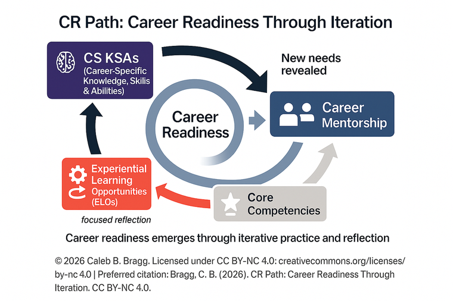

Discover Your Profile — Explore Your Matches
Self-knowledge is the starting point for intentional career development.
Part A — 35-45 min
Complete four assessments and review your results through a worked example. Available now.
Part B — 25-35 min
Explore three career matches and analyze what they require. Unlocks 24 hours after you submit Part A.
What You'll Need
Your CCSU SSO credentials for PathwayU. Everything else is completed right here.
What You'll Produce
An Initial Reflection on your profile and a Career Match Analysis connecting three careers to your CR Path.
By the end of this unit, you will be able to:
- Describe your interests, values, personality, and workplace preferences using PathwayU data
- Identify surprises, confirmations, and tensions in your own profile
- Select three career matches and analyze the CS KSAs and Core Competencies they require
- Synthesize patterns across your three matches to identify development priorities
- Connect your career analysis back to your CR Path self-assessment
Note: Complete Part A first. Part B unlocks 24 hours after you submit — that spacing is intentional. Give yourself time to process before you analyze.
CR Path: Career Readiness Through Iteration. © 2026 Caleb B. Bragg. CC BY-NC 4.0.
Why PathwayU Matters
3 minutes to read
PathwayU measures four dimensions of who you are as a worker and a person. None of them tell you what to do — they tell you what is likely to fit.
Interests
What activities energize you? Based on Holland's RIASEC theory — the same model used by the Bureau of Labor Statistics to classify careers.
Values
What must a career have for you to find it fulfilling? Based on the Theory of Work Adjustment — decades of research on person-environment fit.
Personality
How do you typically think, feel, and act? Based on the HEXACO model — a well-supported framework of six core personality traits.
Workplace Preferences
What kind of organization will bring out your best? Based on the Organizational Culture Profile — matching your values to organizational culture.
Key idea: These are not grades. There are no good or bad results. They are a mirror — and the better you know yourself, the smarter you can walk the CR Path.
Where PathwayU Fits on the CR Path
The CR Path is a framework built on four components: Career-Specific Knowledge, Skills and Abilities (CS KSAs), Core Competencies, Experiential Learning Opportunities (ELOs), and Career Mentorship. PathwayU tells you who you are — and that self-knowledge sharpens every component, especially CS KSAs, by helping you understand which careers fit you and what they actually require.
If you've already completed Module 0: PathwayU gives you richer, more specific data to bring back to your CR Path Map — especially the CS KSA and Career Mentorship rows. Plan to update your map after you finish this unit.
If you're starting here: That's fine. This unit stands on its own. When you're done, Module 0 is the recommended next step — it gives you a framework to organize and continue building on everything you discover here.
Complete Your Assessments
30-40 minutes total
What You'll Complete
Interests Assessment
Identifies your Holland code — the types of activities and environments you're drawn to.
~8 minutesValues Assessment
Identifies what a career must have to feel meaningful and worth your effort.
~8 minutesPersonality Assessment
Maps your consistent traits — how you naturally approach work, people, and problems.
~10 minutesWorkplace Preferences Assessment
Identifies the organizational culture where you'll thrive — not just survive.
~8 minutes
Log In and Complete All Four Assessments
Use your CCSU SSO credentials. Complete all four assessments in one sitting if possible — they flow naturally from one to the next.
Open PathwayU (CCSU SSO) →Opens in a new tab. Come back here when you've finished all four.
Answer honestly, not aspirationally. These assessments work best when you respond based on who you actually are — not who you think you should be. There are no right answers.
Review Your Results — Worked Example
~10 minutes to read
Once you've completed all four assessments, PathwayU generates your profile. Before you reflect on yours, here's a model — not because your results should look like mine, but to show you how to think about them through the CR Path lens.
Caleb's PathwayU Results
Author of the CR Path · Department of Psychological Science, CCSU
My Interests
"I thrive when exploring ideas, asking intellectual questions, and seeking answers. I enjoy math, science, and research, and appreciate having independence. I also thrive in roles that directly help people."
What I notice: Investigative + Social is the classic researcher-teacher combination. The Enterprising supporting interest explains why I'm drawn to building programs and persuading stakeholders — not just studying things quietly in a lab.
My Values
"I need to do my work on my own and use creativity in the workplace. I need the chance to make my own decisions. I need to feel a sense of accomplishment from my work."
What I notice: Independence + Achievement tells me I need autonomy and meaningful work. A micromanaged job with no visible impact would drain me, no matter how well it paid.
My Personality
What I notice: High Conscientiousness means I can build systems and finish what I start. The tension: I'm moderately high on both Extraversion (I like working with people) and Independence (I need autonomy). Teaching + research gives me both.
My Workplace Preferences
What I notice: Recognition means I want to know my work is valued. Stability means I don't want to wonder if my job will exist next year. Together these explain why I'm in higher education in a role where my contributions are visible.
How This Connects to My CR Path
- CS KSAs to prioritize: Research methods, data analysis, curriculum design, program evaluation
- Core Competencies that matter most: Communication (Social interest), Critical Thinking (Investigative), Leadership (Enterprising)
- ELOs that would fit: Research assistantships, teaching practicums, program development roles
- Career Mentorship I'd need: Someone who has built something — a program, a lab, a framework — and can show me what it looks like 10 years further down the path
The profile doesn't tell me WHAT to do. It tells me what to pay attention to as I walk the CR Path.
Your Initial Reflection
~10 minutes
PathwayU Initial Reflection
Look at YOUR PathwayU results and respond to the four prompts below. Use Caleb's example as a model for the kind of thinking we're looking for — not a template to copy. Write 2-4 sentences per prompt.
Make sure you've completed all four PathwayU assessments before writing your reflection. Your responses should be based on your actual results.
Review Before Submitting Part A
Review your reflection below. Use the Back button to edit any response.
What surprised you
What confirmed something you knew
Where you see tension
How it connects to your CR Path
When you're satisfied with your responses, click Submit Part A. The 24-hour timer starts when you submit.
Part A Complete — Take a Break
Part A Submitted
You've completed your assessments and written your initial reflection.
Give yourself at least 24 hours before starting Part B.
Part B unlocks in:
--:--:--
You can close this window and return anytime after the timer expires. Your responses are saved automatically.
Your session has been saved. You can safely close this window now.
Part B is ready!
Click Next to begin exploring your career matches.
Why the Wait?
In Part A, you completed four assessments and made sense of your profile. In Part B, you'll point that self-knowledge at specific careers and ask: "What would I need to build to get there?" That's a different cognitive task — it works better with space between the two.
Processing time isn't wasted time. It's when your brain makes connections you couldn't force.
Explore Your Matches
Pick three careers. Analyze what they require. Connect it to your CR Path.
Where This Fits on the CR Path
In Part A, you learned about yourself — your interests, values, personality, and workplace preferences. Now you'll point that self-knowledge at specific careers and ask: "What would I need to build to get there?" That question is the bridge between knowing yourself and walking the CR Path with purpose.

What You'll Do in Part B
- Browse your Career Matches page in PathwayU and select 3 careers that interest you
- Study Caleb's worked example — the Career Match Analysis table and synthesis
- Complete your own analysis for each of your 3 careers (Pages 10, 11, 12)
- Write a synthesis identifying patterns across your three matches (Page 13)
- Write a connection reflection linking back to your CR Path self-assessment (Page 14)
Time
25-35 minutes
Goal
Translate career requirements into CR Path language
You'll identify
CS KSAs, Core Competencies, ELOs, and mentor types for 3 careers
You'll produce
A pattern analysis connecting your matches to development priorities
Your Task and a Worked Example
~15 minutes to read and select your three careers
Your Task: Pick 3 Careers
Browse your Career Matches page in PathwayU and select 3 careers that interest you. Use the "Favorite" button in PathwayU to save them.
Selection criteria — pick careers that are:
- Interesting to you — even if you're not sure why
- At least "Good" match strength (stronger is fine too)
- Ideally from at least 2 different subject areas — so you see range
If none of your matches feel right: That's OK. Pick 3 that seem closest, most interesting, or most surprising. This is exploration, not commitment.
Pro tip: Use the filters on your Career Matches page. Try filtering by Education Level, Subject Area, or Industry. Don't just pick the first three — scroll, explore, click into the descriptions.
Caleb's Career Match Analysis
Modeling the thinking process — not the "right" answers
Why I picked these three: I favorited Industrial-Organizational Psychologist, Psychology Teacher (Postsecondary), and Business Teacher (Postsecondary). All three are "Very Strong" matches. They span two subject areas and represent both the practitioner and the academic pathways within my field.
Industrial-Organizational Psychologist
Subject Area: Human Services
Apply principles of psychology to human resources, administration, management, sales, and marketing problems. May include policy planning, employee testing and selection, training and development, and organizational development.
Psychology Teacher, Postsecondary
Subject Area: Education
Teach courses in psychology, such as child, clinical, and developmental psychology, and psychological counseling. Includes those primarily engaged in teaching and those who combine teaching and research.
Business Teacher, Postsecondary
Subject Area: Education
Teach courses in business administration and management, such as accounting, finance, human resources, labor relations, marketing, and operations research.
| Career | CS KSAs Required | Core Competencies Required |
|---|---|---|
| I/O Psychologist | Research MethodsStatisticsPsychometricsOrg Behavior | CommunicationCritical ThinkingLeadership |
| Psychology Teacher | Psychology ContentPedagogyResearch MethodsAssessment Design | CommunicationCritical ThinkingEquity & Inclusion |
| Business Teacher | Business TheoryPedagogyResearch MethodsIndustry Knowledge | CommunicationCritical ThinkingProfessionalism |
What Caleb Noticed Across All Three
- Research Methods appears in all three. Non-negotiable — needs to be built deeply, not just passed.
- Communication and Critical Thinking appear in every column. Need to become excellent, not just adequate.
- Pedagogy appears in two of three. If teaching is on my path, I need deliberate ELO practice in instructional settings.
- I/O requires organizational knowledge the teaching matches don't. Different ELO pathways for consulting/industry vs. academia.
Your Career Match Analysis
Career 1 of 3
Click any competency for its definition:
1First Career Match
If you're unsure whether something is a CS KSA or a Core Competency: field-specific = CS KSA; travels everywhere = Core Competency.
Your Career Match Analysis
Career 2 of 3
Click any competency for its definition:
2Second Career Match
Aim for a career from a different subject area than Career 1 if possible.
Your Career Match Analysis
Career 3 of 3
Click any competency for its definition:
3Third Career Match
You're practicing the skill of reading a career description and translating it into CR Path language. If you're unsure — take your best shot.
Synthesize Your Three Matches
~8 minutes
Caleb's Synthesis as a Model
- Research Methods appears in all three — a non-negotiable CS KSA to build deeply
- Communication and Critical Thinking appear in every competency column — need to become excellent, not just adequate
- Pedagogy appears in two of three — signals a specific ELO direction if teaching is on the path
- I/O requires organizational knowledge the teaching matches don't — different ELO pathways for different trajectories
Your Synthesis
Look across all three of your career matches and identify the patterns.
No patterns yet? Go back to pages 10-12 and look at what you wrote for CS KSAs and Core Competencies across all three careers. What words or themes appear more than once? Those are your patterns.
Connecting Back and Forward
~8 minutes
Back to Your CR Path: What's Changed?
In Module 0 — or in your own self-assessment if you came to PathwayU first — you identified your strongest and least-developed CR Path components. Now that you've analyzed three career matches, look at those rankings again:
- Did your least-developed component show up in your career analysis? If so — that's now a priority, not just a gap.
- Did your strongest component match what your careers require? If not — you may need to diversify.
- Are there CS KSAs you haven't started building yet? Those are signals for courses, ELOs, and mentor questions.
Connection Reflection
Connect your career match analysis back to your CR Path self-assessment — whether from Module 0 or your own prior thinking.
What to Do With What You've Built
Unlike your CR Path Map — which you'll update after every meaningful experience — your PathwayU profile measures things that are relatively stable: interests, personality, values, and workplace preferences. These don't shift quickly. Plan to revisit this unit roughly once a year, or at a major transition — before a job search, before changing your major, before senior year. When you do return, bring what you learn back to your CR Path Map.
🗺️ Update Your CR Path Map
If you've completed Module 0, go back now. Your CS KSA row should be more specific — not just "what my major teaches" but named, career-connected skills you're deliberately building toward. Re-rank your Component Strength Sort with fresh eyes. Rewrite your Baseline Reflection with what you now know.
Haven't done Module 0 yet? It's the recommended next step — it gives you a framework to keep building on what you discovered here.
🧠 Name Your CS KSAs More Precisely
You now have career-specific evidence. The CS KSAs you identified across your three matches aren't generic — they're tied to careers that fit who you actually are. Start connecting those to courses you're taking or planning. Make those connections visible: in advising, on your resume, in interviews.
🔄 Take One Concrete ELO Step
You named at least one experiential learning opportunity for each career match. Don't let that sit. Pick the most accessible one and take a single concrete action this week — look up the program, email a contact, or ask an advisor how to get involved.
👥 Find Your Career Mentor
You described the type of mentor you'd need for each career. That description is your search criteria. Look for that person in your faculty, your alumni community, a supervisor, or on LinkedIn. An informational interview — even 20 minutes — is Career Mentorship.
This unit works whether you're inside a course sequence or on your own. Bring your profile and career analysis to advising appointments, informational interviews, resume workshops — any career conversation where "what do I want and what do I need to build?" is on the table.
Review Before Submitting
Review your Part B responses below. Use the Back button to edit anything.
Career 1
Career 2
Career 3
Synthesis
Connection Reflection
Get a Copy of Your Responses (Optional)
Enter your CCSU email to receive a copy of your responses. Optionally share with a supervisor, advisor, or mentor — a great conversation starter.
They'll get a copy of your career match analysis.
When you're satisfied, click Submit PathwayU Unit to record your completion.
PathwayU Unit Complete
You've completed the PathwayU Unit.
You've completed your profile, explored your matches, and translated career requirements into CR Path language.
This is what intentional career development looks like.
Responses saved: 0
Part A completed: --
Part B completed: --
CR Path: Career Readiness Through Iteration. © 2026 Caleb B. Bragg. CC BY-NC 4.0.